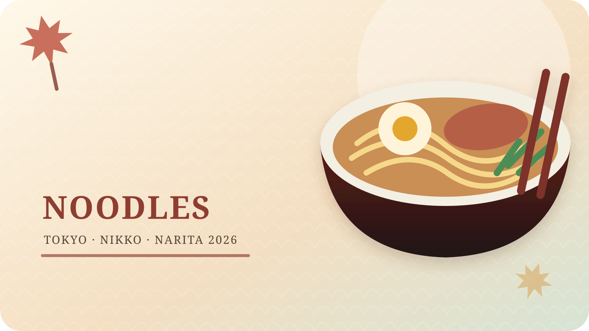

店面實景與招牌餐點實拍
招牌餐點保留店家實拍；下方「必點餐點」每一道另附圖片，並標示照片來源或料理示意圖。
照片用於行前辨識與餐點選擇；菜色、價格、擺盤、外觀及供應狀況可能調整，仍以到店當日為準。
建議造訪DAY 4｜2026/11/24（二）
午餐
午餐
營業時間一般日約 11:30–22:00；星期二常見短時段約 11:30–17:00。
預算約 ¥1,000–2,500／人
地址／交通東京都澀谷區神宮前6-13-7
明治神宮前站步行約 5 分鐘；Cat Street 一帶。
明治神宮前站步行約 5 分鐘；Cat Street 一帶。
必點餐點與點法

放進行程的實戰排法
時間安排
11:10–11:20 到隊伍最理想；吃完再走澀谷行程。若 12:30 才到，必須重新評估澀谷 SKY 時間。
預約
以現場排隊為主；7 人可能分批入座。
排隊判斷
開店後很快排隊；平日也可能等 30–60 分鐘。
7 人團體策略
- 可接受拆成 3＋4 人入座。
- 每人先點一碗主食，再共享少量天婦羅。
- 不吃牛肉者下單前先確認高湯與油脂，不只看表面配料。
營業與行程提醒
營業：一般日約 11:30–22:00；星期二常見短時段約 11:30–17:00。
本次提醒：營業時間依官方 Instagram／現場公告變動；DAY 4 是星期二，切勿把它延後成晚餐。
當日路線：神宮外苑・表參道・澀谷・新宿
不吃牛肉者判斷
風險標示：需確認
招牌培根款含豬肉，不含牛肉的可能性高；但高湯、油脂與期間限定配料需確認。對嚴格無牛者，請直接問「牛骨、牛脂」是否使用。
容易踩雷
- 星期二提前結束營業。
- 排隊會壓縮澀谷 SKY 前的購物時間。
- 濃郁款份量足，之後章魚燒只需少量。
給店員看的日文
牛骨スープや牛脂は使っていますか？（有使用牛骨湯或牛油嗎？）
カルボナーラうどんと、さっぱりしたうどんを一つずつお願いします。（請給我們一碗奶油烏龍和一碗清爽口味。）
資料與照片來源
- 店面照片來源麵散原宿店面
- 招牌餐點照片來源麵散招牌培根奶油卡邦尼釜玉烏龍麵
- 其餘推薦餐點參考照片依餐點名稱載入 Wikimedia Commons 授權圖片；每張圖片下方可開啟原圖與授權資訊。
- 麵散營業資訊參考星期二短營業與排隊經驗
- 原始東京行程
營業時間、菜單與預約規則請在出發前 7–14 天再次確認。